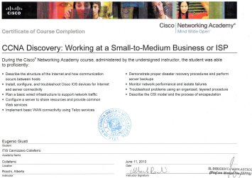
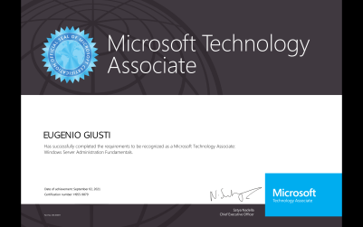
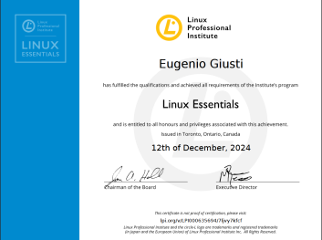
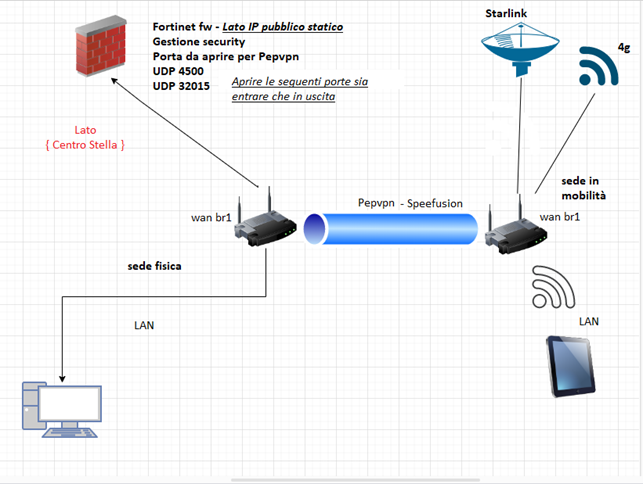
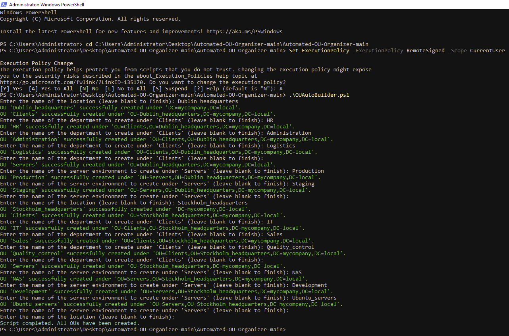
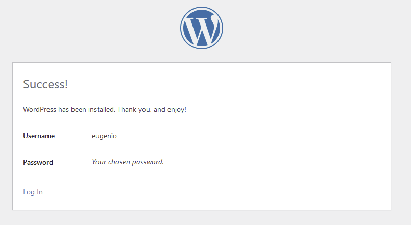
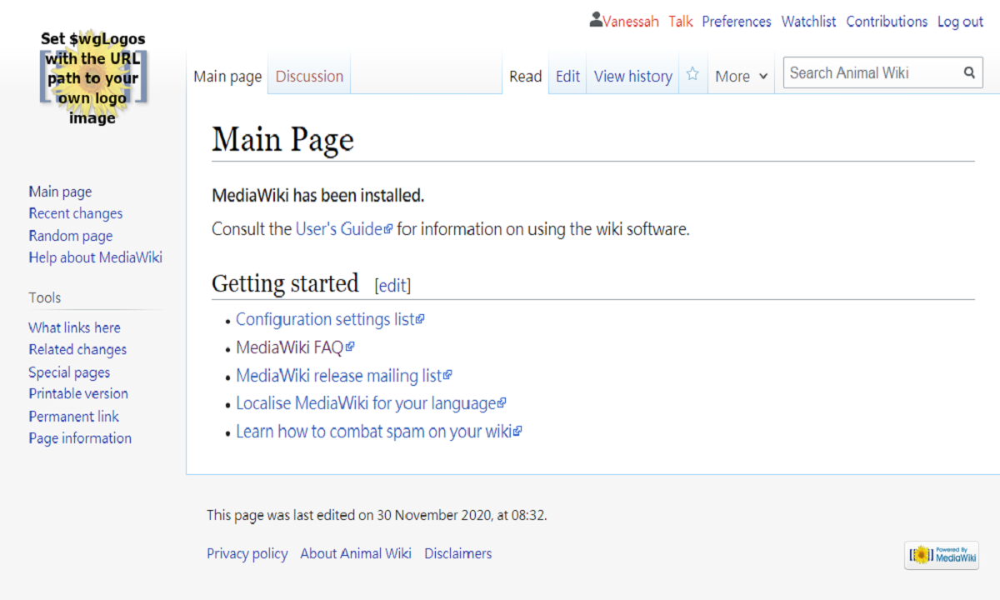
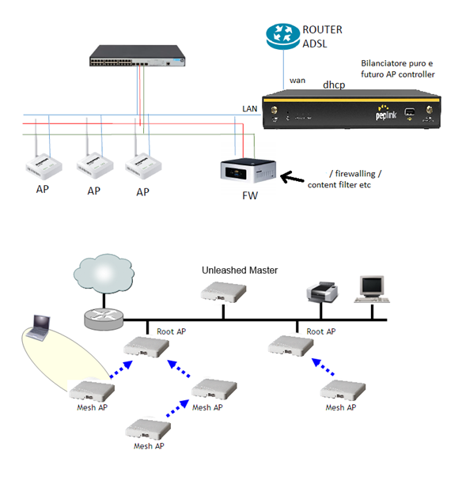

Hey I’m Eugenio &
This is my Website
Who I Am
I’m an IT professional with 10 years of experience in system administration and infrastructure management, gained across diverse environments including cloud hosting providers. I work with both Linux and Windows systems, manage virtual machines, networking, and virtualization technologies. I support the full infrastructure lifecycle. From deployment and configuration to security and automation, ensuring high availability and optimal performance. I collaborate with developers to streamline delivery processes and implement scalable, open source solutions.
My Vision
I believe that the key to success in IT lies in the combination of strong theoretical foundations, problem-solving skills, and a practical approach to everyday challenges. Every project is an opportunity to grow and improve, and my ambition is to continue evolving in the cloud field, aiming to effectively and securely manage modern infrastructures.


About Me
I’m an IT professional with a solid background in infrastructure management, virtualization, networking, and cloud hosting services. Over the years, I’ve worked in datacenter environments delivering cloud-based solutions such as virtual machines and SaaS applications, while managing both Linux and Windows systems. I’m particularly passionate about open-source technologies and continue to expand my skills in automation, cloud platforms like AWS, and infrastructure best practices to build efficient, reliable, and scalable environments. Outside of work, I’m a sociable person. Having played competitive football for over 10 years, I’ve developed a strong sense of discipline, teamwork, and resilience. I enjoy exchanging ideas over a pint with friends, diving into deep conversations, and discovering new perspectives. I very like Travelling that allows me to explore cultures, challenge myself, and grow both personally and professionally. My mindset is simple: you never stop learning.
Languages
-
Italian
Native -
English
Professional working proficiency
Key Skills
-
Problem Solving
-
Team working
-
Communication
My Skills

Linux

Bash

Sophos

Proxmox

SQL Admin

Cisco
My Certifications



My Resume
Education
2025
Continuous Learning Journey
I am dedicated to continuously updating my skills and knowledge in both on-premise and cloud technologies. I have completed various certifications and courses, and I actively explore new open-source technologies to enhance my expertise and stay current with the latest IT industry trends. My focus is on optimizing IT infrastructures, improving automation, and implementing best practices to ensure efficiency and reliability.
2024
Hands-On Experience in IT Infrastructure and Cloud Services
While working in a datacenter offering cloud services such as virtual machines and SaaS applications, I gained hands-on experience in virtualization, system maintenance, and infrastructure support. I strengthened my skills in both Windows and Linux environments, building on certifications like Windows Server Fundamentals and Linux Essentials. I applied this knowledge to real scenarios, managing services, handling permissions, and maintaining secure, stable systems. Alongside my work, I committed to daily study to deepen my understanding of operating systems, networking, and infrastructure, ensuring I could support modern cloud-based environments effectively.
2013
Electronics and Networking: A Solid Technical Skillset
My Electronics Technician degree provided me with a strong foundation in analog and digital electronics, circuit design, and computer architecture. This technical background has been instrumental in understanding the inner workings of modern networking equipment and systems. Additionally, earning the Cisco CCNA Discovery 2 certification enhanced my expertise in network design, configuration, and management. I gained in-depth knowledge of network protocols, switch and router configuration, and security techniques to safeguard network infrastructures. This certification also allowed me to develop hands-on skills in troubleshooting network issues and optimizing performance, making me more proficient and competitive in my field.
Experience
2025
Ongoing
I am currently working as an Independent IT Consultant, specializing in system engineering and infrastructure solutions. My focus is on helping businesses optimize their on-premise and cloud infrastructures while continuously expanding my expertise in cutting-edge technologies. I am passionate about delivering innovative solutions and collaborating with diverse teams to create robust and efficient IT environments.
2022
Cloud & System Engineering
When I transitioned into a System Engineer role, I gained hands-on experience working within a datacenter that provided cloud services, including virtual machine hosting and SaaS application delivery. I was responsible for implementing and managing key infrastructure services, focusing on virtualization, system reliability, and security. I worked on complex environments, optimizing virtual infrastructures to support scalable and high-availability solutions for clients. This experience deepened my knowledge of managing cloud-based systems and led me to specialize in open-source technologies, helping to build flexible, cost-effective infrastructures tailored to business needs.
2014
Hardware & Software technician
When I became an IT technician, I started immersing myself in the world of IT, gaining hands-on experience in operating systems, networking, and hardware. I worked with various operating systems, learning to manage and troubleshoot system configurations. At the same time, I specialized in networking, configuring and optimizing local and wide-area networks, gaining expertise in network technologies and protocols. Equally important, I developed a strong knowledge of hardware, diagnosing and repairing issues with devices and physical components. This allowed me to build a solid foundation for my career, combining both software and hardware skills into a single professional profile.
My Work






Testimonial


Contact Me
I'm always excited to collaborate on new projects and explore innovative ideas. Whether you have a specific project in mind or just want to discuss potential opportunities, I'd love to hear from you!
‘‘ I had immense pleasure and gratitude working with Eugenio. He is an excellent system and network administrator with proven field experience alongside me at @Knowit SRL. He is a serious and capable professional, able to work both independently and in a team, delivering outstanding results in all areas. He has in depth knowledge of network and system administration, as well as mixed environments, for both medium-sized businesses and large enterprises. I highly recommend him to anyone reading this comment, he is a skilled professional with great expertise. ’’
‘‘ I had the pleasure of collaborating with Eugenio during the migration of a management software system. In particular, Eugenio handled the system administration tasks, managing the database migration to the new server and installing the application, performing all the necessary operational tests to ensure its proper functionality. Thanks to his professionalism and attention to detail, the migration was completed without any downtime, ensuring the system's operational continuity. Our collaboration was excellent, and I can confirm that Eugenio is a reliable, independent, and highly qualified professional in his role. I highly recommend him for any project that requires advanced system administration skills and effective IT infrastructure management. ’’
‘‘ ’’
‘‘ . ’’
‘‘ ’’